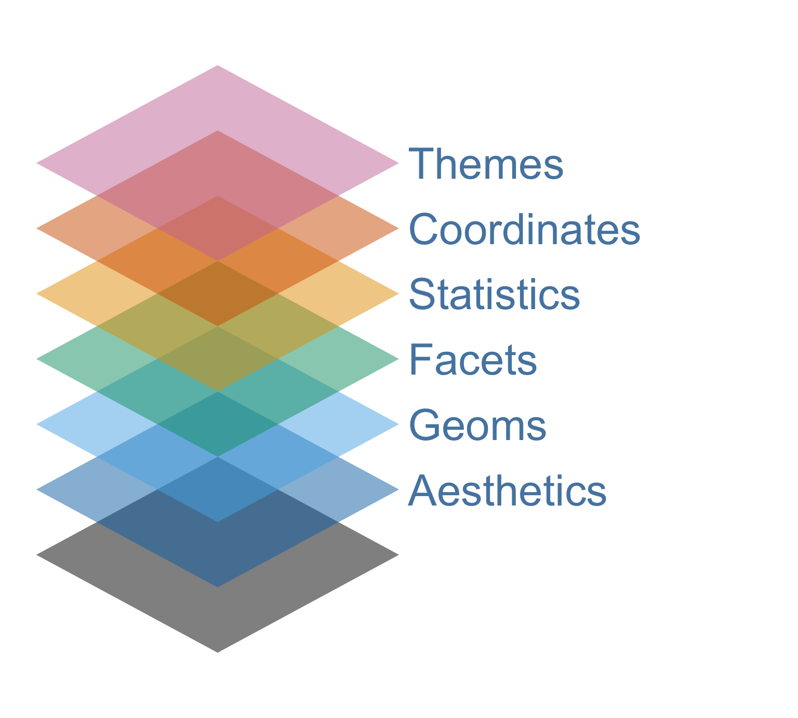
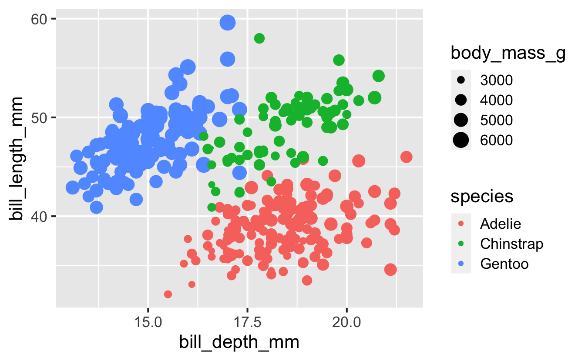
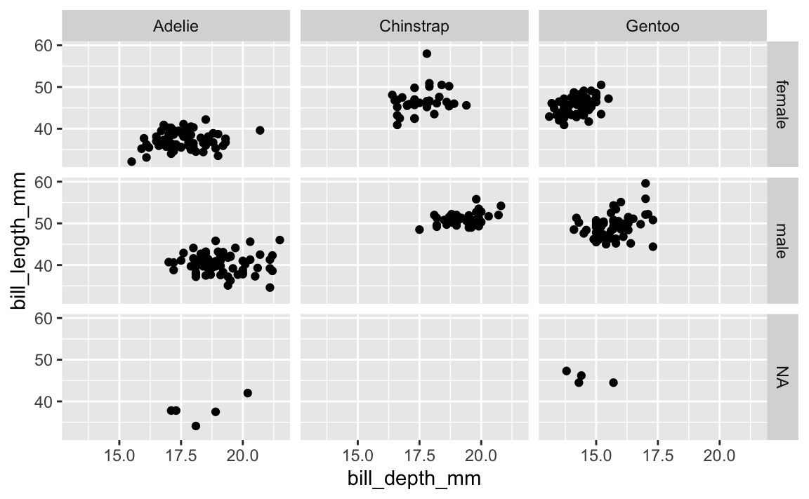
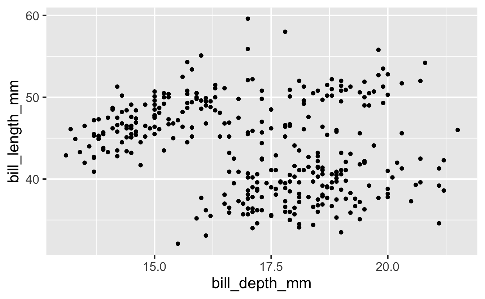
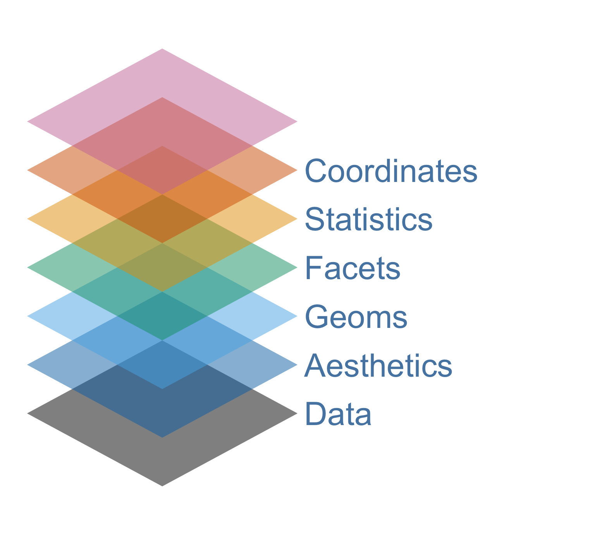
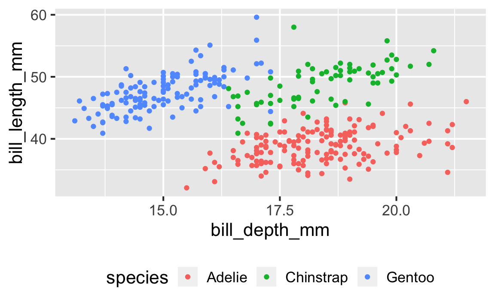
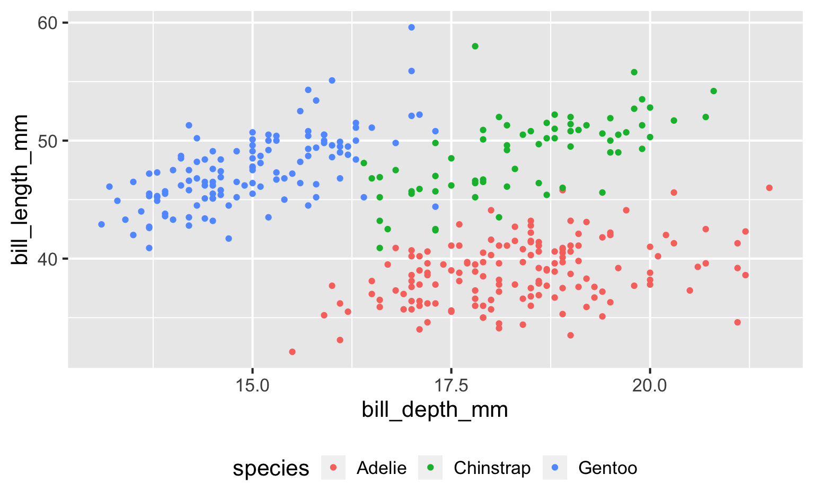

Grammar of graphics
Data visualization and transformation
Grammar of graphics
Grammar of Graphics
- The grammar of graphics is a tool that enables us to concisely describe the components of a graphic
- The ggplot2 package, which is part of tidyverse, implements the grammar of graphics in R

Layers
With ggplot2, you can create a wide variety of plots layer-by-layer:
Layer 1: Data

Data
Foundation of the plot that gives you the canvas on which you can “paint” your data:
ggplot(penguins)
Layer 2: Aesthetics

Aesthetics
Characteristics of plotting characters that can be mapped to a specific variable in the data, e.g.:
colorshapesizealpha(transparency)- …
Color
The color aesthetic mapped to species:
Shape
The shape aesthetic mapped to island:

Color and shape
The color and shape aesthetics mapped to species:

Size
The size aesthetic mapped to body_mass_g:

Alpha
The alpha aesthetic mapped to flipper_length_mm:
Mapping vs. setting

Mapping vs. setting
Mapping:
Determine the size, alpha, etc. of points based on the values of a variable in the data – goes into aes():

Setting:
Determine the size, alpha, etc. of points not based on the values of a variable in the data – goes into geom_*():

Layer 3: Geoms

Geoms
Visual representations of data points:
- Short for geometric objects
geom_*()functions are used to add geoms to a plot- Each geom adds a layer to the plot
geom_point()
geom_smooth()
. . .
and many more soon…
Layer 4: Facets

Faceting - what and why
- Smaller plots that each display different subsets of the data
- Also referred to as small multiples
- Useful for exploring conditional relationships and large data
. . .

Faceting - how
ggplot(
penguins,
aes(
x = bill_depth_mm,
y = bill_length_mm)
) +
geom_point()
Faceting - how
Faceting by two variables


Faceting by one variable

Layer 5 and 6:
Statistics and Coordinates

more on these later…
Layer 7: Themes

Themes
Control the non-data elements of the plot:
- Select from pre-defined themes with
theme_*()functions - Take control of individual theme elements in the
theme()function
theme_dark()

theme()
ggplot(penguins, aes(x = bill_depth_mm, y = bill_length_mm, color = species)) +
geom_point() +
theme(legend.position = "bottom")
. . .
and many more throughout the course…